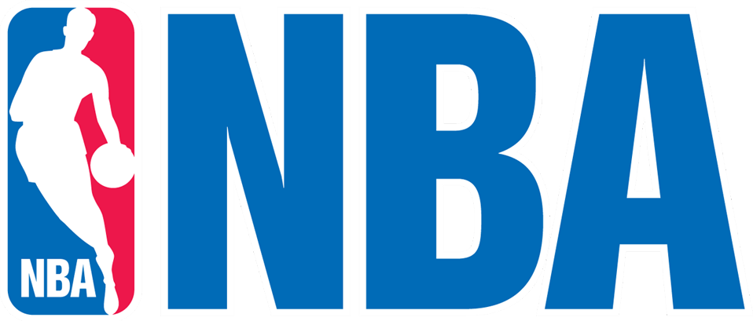

Contenido Relacionado:

Ver Menciones Honorables
|  | Shaquille O’Neal | Raúl Sánchez |
| PROMEDIOS EN TEMPORADA REGULAR | |||||||
| Minutos Jugados | Puntos | Rebotes | Asistencias | Tiros de Campo(%) | Triples(%) | Tiros Libres(%) | |
| Carrera | 34,7 | 23,7 | 10,9 | 2,5 | 58 | 5 | 53 |
| PROMEDIOS PLAYOFFS | |||||||
| Minutos Jugados | Puntos | Rebotes | Asistencias | Tiros de Campo(%) | Triples(%) | Tiros Libres(%) | |
| Carrera | 37,5 | 24,3 | 11,6 | 2,7 | 56 | -- | 50 |